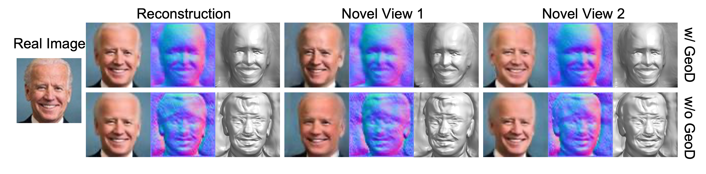
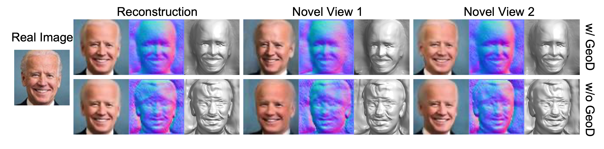

Results
Qualitative comparison with pi-GAN as the base model.
3D reconstruction and novel view synthesis on real data with GAN inversion.
 |
|  |
|
|  |
@inproceedings{shi2022improving,
title = {Improving 3D-aware Image Synthesis with A Geometry-aware Discriminator},
author = {Shi, Zifan and Xu, Yinghao and Shen, Yujun and Zhao, Deli and Chen, Qifeng and Yeung, Dit-Yan},
booktitle = {NeurIPS},
year = {2022}
}
Comment: Proposes the generative radiance fields for 3D-aware image synthesis.